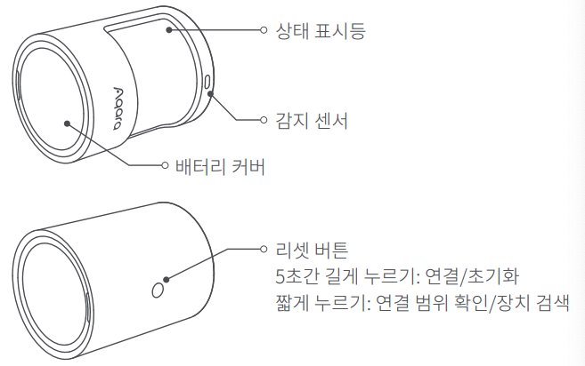
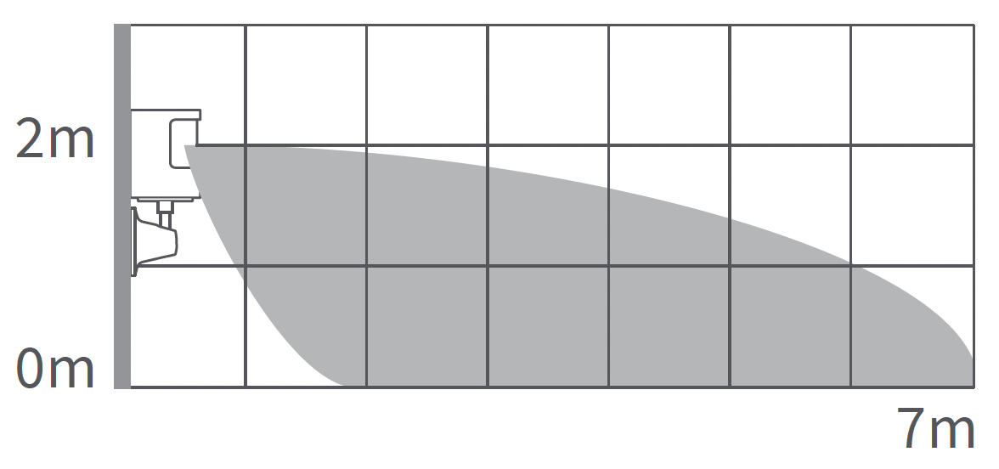
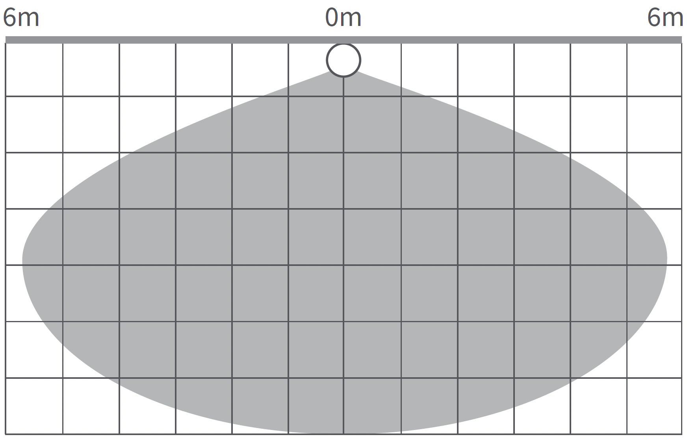
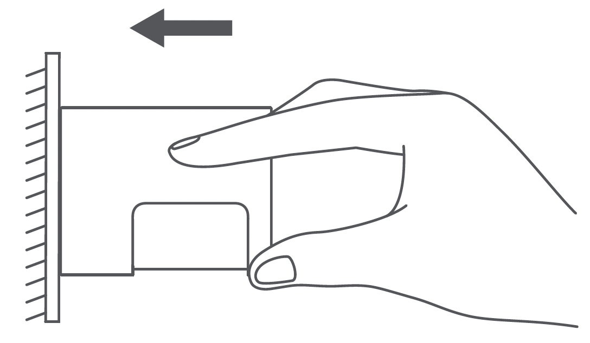
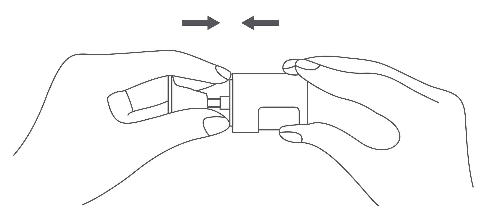
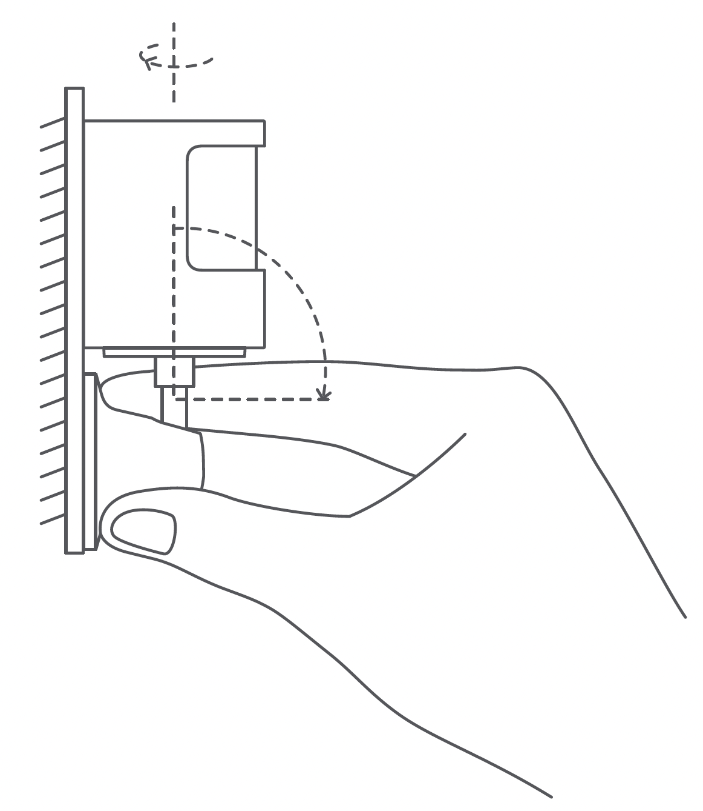
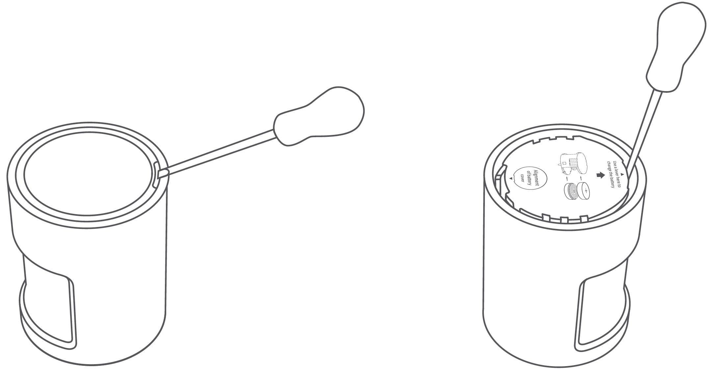
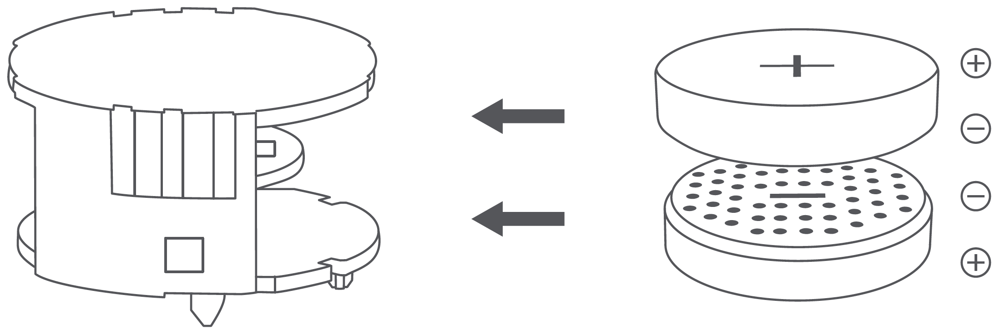
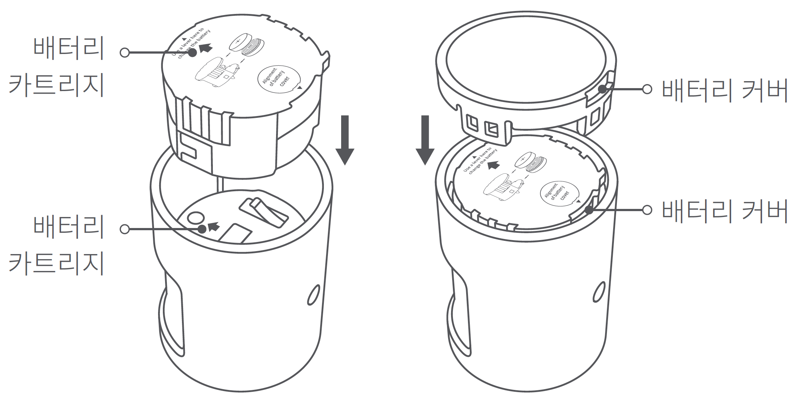

10 모션센서 P1
10.1 제품 소개
모션 센서 P1은 인체의 움직임과 주변의 조도환경을 감지하는 센서가 내장되어 있습니다. 감지 영역 내에서 움직임을 감지하거나 조도의 변화가 있는 경우, 해당 상황을 알림으로 보내거나 해당 조건을 자동화 트리거로 사용할 수 있습니다.
해당 장치를 사용하기 위해서는 Zigbee 3.0을 지원하는 아카라 허브가 필요합니다.
애플 홈킷에서 사용하기 위해서는 특정한 허브가 필요합니다.

10.2 빠른 설정
10.2.1 Aqara Home 앱 다운로드
앱 스토어에서 “Aqara Home”을 검색하거나 아래 로고를 클릭해 주세요.


10.2.2 장치 추가
아카라 허브의 사용자 매뉴얼에 따라 허브를 앱에 추가해 주십시오.
사용 전에 배터리 절연 탭을 제거해 주십시오.
아카라홈 앱을 열고 오른쪽 상단 “+”를 누른 후, “장치 추가”를 누릅니다. 그리고, “센서” 탭을 누른 후, “모션 센서 P1” 선택하고, 지시에 따라 추가 합니다.페이지로 들어갑니다.
연결이 되지 않는 경우, 모션 센서 P1를 허브에 더 가까이 이동시켜서 다시 시도해 주십시오.
10.3 주의 사항
모션 센서가 허브와 정상적으로 통신하는 지 확인 한 후에 제품을 고정하여 사용해 주세요.
스티커가 떨어질 수 있으므로 타일, 유리, 대리석 등 미끄럽거나 습한 표면에 설치하지 마세요.
스트커가 떨어 질 수 있으므로 조명이나 열원 근처에 설치하지 마세요.
스티커가 떨어질 수 있으므로 거칠거나 울퉁불퉁한 물체 표면에 설치하지 마세요.
적외선 간섭으로 인해 잘못된 트리거가 발생할 수 있으므로 전자 제품 및 열원 근처에 설치하지 마세요.
(유효 감지 영역: 측면 View)

(유효 감지 영역: 평면 View)

- 권장 설치 높이는 1.2 ~ 2m입니다. 1.2m 미만으로 설치 시 감지 영역이 줄어 들 수 있으며, 2m 이상의 높이에 설치할 경우 센서 하단부에 사각지대가 형성되어 일부 영역을 감지하지 못할 수 있습니다.
10.4 설치 옵션
10.4.1 설치 1
(1) 설치를 희망하는 위치를 선택한 후 표면을 깨끗하게 청소해 주세요.
(2) 센서로 감지할 방향을 설정한 후, 배터리 커버 하단에 스티커를 붙인 다음 30초 이상 세게 눌러 센서를 부착해 주세요.

10.4.2 설치 2
(1) 설치를 희망하는 위치를 선택한 후 표면을 깨끗하게 청소해 주세요.
(2) 동봉된 스트커를 사용하여 모센 센서와 거치대를 붙인 후, 약 30초간 세게 눌러 단단하게 고정해 주세요.

(3) 모션 센서가 부착된 거치대에 스티커를 붙힌 후, 평평한 표면에서 약 30초간 세게 눌러 단단하게 고정해 주세요. 벽면에 설치하는 경우 감지 방향을 조정할 수 있도록, 받침대 방향이 위로 향하는 것을 권장합니다.

10.5 배터리 교체 방법
(1) 드라이버를 사용하여 배터리 커버를 열어 주세요.

(2) CR2450 배터리 2개를 배터리 카트리지의 맨 위와 아래쪽에 각각 설치해 주세요.

(3) 배터리를 교체한 후에 화살표에 표시된 방향에 따라 배터리 커버를 덮어 주세요.

10.6 제품 사양
모델명: MS-S02
배터리 유형: CR2450
무선 프로토콜: Zigbee 3.0
제품 크기: 33.1 x 33.1 x 41.6mm
작동 온도: -10’C ~ 55’ C
작동 습도: 0 ~ 95 RH / 비결로 조건
구성품: 모션 센서 P1 x 1, 받침대 x 1, 스티커 x 1, 사용 설명서 x 1
10.7 경고
본 제품은 반드시 어린이의 손이 닿지 않는 곳에 보관하세요.
본 제품은 실내 사용 용도로 설계되었습니다. 습기가 많은 환경이나 실외에서 사용하지 마십시오.
비바람에 노출된 장소, 물이 튀는 곳에 설치하지 마세요. 물 또는 액체류를 제품에 엎지를 경우 고장, 감전 및 화재의 위험이 있습니다.
본 제품을 열원 부근에 설치하거나 환기가 잘 되지 않는 밀폐된 공간에서 상요하지 마세요.
본 제품을 임으로 분해, 수리, 개조하지 마십시오. 수리가 필요한 경우 support@aqara.kr로 연락하십시오.
본 제품은 생활의 편리 및 편의성을 개선하기 위한 용도로 적합합니다. 가정, 건물, 창고 또는 다른 장소의 방범 용도로 사용하는 것을 권장하지 않습니다. 사용자가 상기 사용 지침을 따르지 않고 해당 제품을 사용할 경우 발생하는 어떠한 위험 및 재산 손실에도 제조사는 귀책이 없음을 알려 드립니다.